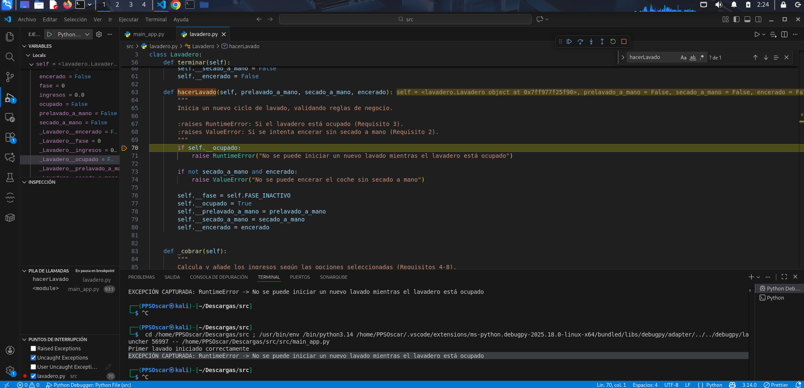
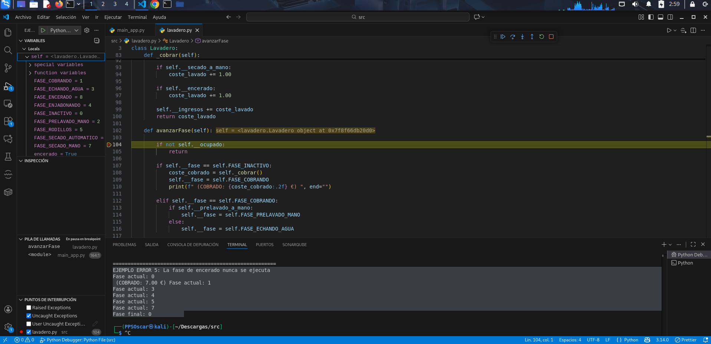

Ejecución y Depuración
En este apartado muestro, en primer lugar, la corrección del código y, a continuación, la ejecución y depuración del código. Pueden verse en cada apartado las correcciones realizadas.
1. Corrección del código
- En mi IDE, utilizaré la herramienta de Ejecución y Depuración que viene integrada en el entorno para ejecutar, depurar, ver los errores del código y corregirlos.
En primer lugar, desde la propiar herramienta de depuración crearé un archivo .json para la automatización de la depuración. En mi caso, le he creado dentro del propio proyecto y muestro la herramienta preparada para depurar los archuvos.

- Error 1. Iniciar un lavado estando ocupado: El tipo de excepción que se produce no es correcto, debe lanzarse ValueError y no RuntimeError.
Mediante la ejecución de dos llamadas consecutivas al método hacerLavado sin finalizar el primer ciclo, y usando un breakpoint en la validación de estado, compruebo que el sistema detecta que el lavadero está ocupado y lanza una excepción.

Solución:
raise ValueError("No se puede iniciar un nuevo lavado mientras el lavadero está ocupado")
Ejemplo añadido al main para ejecutar la depuración y probar el error:
lavadero_error = Lavadero()
try:
# Primer lavado (arranca correctamente)
lavadero_error.hacerLavado(prelavado_a_mano=False,
secado_a_mano=False,
encerado=False)
print("Primer lavado iniciado correctamente")
# Segundo lavado SIN terminar el primero
lavadero_error.hacerLavado(prelavado_a_mano=True,
secado_a_mano=False,
encerado=False)
except Exception as e:
print(f"EXCEPCIÓN CAPTURADA: {type(e).__name__} -> {e}") # Esperado: RuntimeError
- Error 2. Precio incorrecto del secado a mano: Según el enunciado, el total deberían de ser 6€ y no 6,20€.

Solución:
if self.__secado_a_mano:
coste_lavado += 1.00
Ejemplo añadido al main para ejecutar la depuración y probar el error:
print("\n=======================================================")
print("EJEMPLO ERROR 3: Precio incorrecto del secado a mano")
lavadero_error3 = Lavadero()
# Lavado SOLO con secado a mano
lavadero_error3.hacerLavado(prelavado_a_mano=False,
secado_a_mano=True,
encerado=False)
# Avanzamos SOLO UNA FASE para que se cobre
lavadero_error3.avanzarFase()
print(f"Ingresos tras el cobro: {lavadero_error3.ingresos:.2f} €")
- Error 3: Fase incorrecta tras rodillos (condición invertida): Sin secado a mano debería de pasar a secado automático (fase 6).

Solución:
elif self.__fase == self.FASE_RODILLOS:
if self.__secado_a_mano:
self.__fase = self.FASE_SECADO_MANO
else:
self.__fase = self.FASE_SECADO_AUTOMATICO
Ejemplo añadido al main para ejecutar la depuración y probar el error:
print("\n=======================================================")
print("EJEMPLO ERROR 4: Fase incorrecta tras rodillos (sin secado a mano)")
lavadero_error4 = Lavadero()
# Lavado SIN secado a mano
lavadero_error4.hacerLavado(prelavado_a_mano=False,
secado_a_mano=False,
encerado=False)
# Avanzamos fases manualmente
while lavadero_error4.ocupado:
print(f"Fase actual: {lavadero_error4.fase}")
lavadero_error4.avanzarFase()
print(f"Fase final: {lavadero_error4.fase}")
- Error 4. La fase de encerado (fase 8) nunca se ejecuta: La fase 8 nunca se ejecuta, incumpliendo el enunciado.

Solución:
elif self.__fase == self.FASE_SECADO_MANO:
if self.__encerado:
self.__fase = self.FASE_ENCERADO
else:
self.terminar()
elif self.__fase == self.FASE_ENCERADO:
self.terminar()
Ejemplo añadido al main para ejecutar la depuración y probar el error:
print("\=======================================================")
print("EJEMPLO ERROR 5: La fase de encerado nunca se ejecuta")
lavadero_error5 = Lavadero()
# Lavado con secado a mano y encerado
lavadero_error5.hacerLavado(prelavado_a_mano=False,
secado_a_mano=True,
encerado=True)
# Avanzamos fases y mostramos todas
while lavadero_error5.ocupado:
print(f"Fase actual: {lavadero_error5.fase}")
lavadero_error5.avanzarFase()
print(f"Fase final: {lavadero_error5.fase}")
2. Código corregido
A continuación muestro el código completo del programa con los errores comentados corregidos:
- main_app.py
# main_app.py
# Importar la clase desde el otro archivo (módulo)
from lavadero import Lavadero
# MODIFICACIÓN CLAVE AQUÍ: La función ahora acepta 3 argumentos
def ejecutarSimulacion(lavadero, prelavado, secado_mano, encerado):
"""
Simula el proceso de lavado para un vehículo con las opciones dadas.
Ahora acepta una instancia de lavadero.
:param lavadero: Instancia de Lavadero.
:param prelavado: bool, True si se solicita prelavado a mano.
:param secado_mano: bool, True si se solicita secado a mano.
:param encerado: bool, True si se solicita encerado.
"""
# Se muestran las opciones solicitadas al inciar el lavado. Se muestran las excepciones
print("--- INICIO: Prueba de Lavado con Opciones Personalizadas ---")
# Mostrar las opciones solicitadas
print(f"Opciones solicitadas: [Prelavado: {prelavado}, Secado a mano: {secado_mano}, Encerado: {encerado}]")
# 1. Iniciar el lavado
try:
# Esto establece las opciones y pasa a Fase 0 (Inactivo, pero Ocupado=True)
lavadero.hacerLavado(prelavado, secado_mano, encerado)
print("\nCoche entra. Estado inicial:")
lavadero.imprimir_estado()
# 2. Avanza por las fases
print("\nAVANZANDO FASE POR FASE:")
# Usamos un contador para evitar bucles infinitos en caso de error o bucles inesperados
pasos = 0
while lavadero.ocupado and pasos < 20:
# El cobro ahora ocurre en la primera llamada a avanzarFase (transición 0 -> 1)
lavadero.avanzarFase()
print(f"-> Fase actual: ", end="")
lavadero.imprimir_fase()
print()
pasos += 1
print("\n----------------------------------------")
print("Lavado completo. Estado final:")
lavadero.imprimir_estado()
print(f"Ingresos acumulados: {lavadero.ingresos:.2f} €")
print("----------------------------------------")
except ValueError as e: # Captura la excepción de regla de negocio (Requisito 2)
print(f"ERROR DE ARGUMENTO: {e}")
except RuntimeError as e: # Captura la excepción de estado (Requisito 3)
print(f"ERROR DE ESTADO: {e}")
except Exception as e:
print(f"ERROR INESPERADO: {e}")
# Punto de entrada (main): Aquí pasamos los parámetros
if __name__ == "__main__":
lavadero_global = Lavadero() # Usamos una única instancia para acumular ingresos
""""
# EJEMPLO 1: Lavado completo con prelavado, secado a mano, con encerado (Requisito 8 y 14)
# Precio esperado: 5.00 + 1.50 + 1.00 + 1.20 = 8.70 €
print("\n=======================================================")
print("EJEMPLO 1: Prelavado (S), Secado a mano (S), Encerado (S)")
ejecutarSimulacion(lavadero_global, prelavado=True, secado_mano=True, encerado=True)
# EJEMPLO 2: Lavado rápido sin extras (Requisito 9)
# Precio esperado: 5.00 €
print("\n=======================================================")
print("EJEMPLO 2: Sin extras (Prelavado: N, Secado a mano: N, Encerado: N)")
ejecutarSimulacion(lavadero_global, prelavado=False, secado_mano=False, encerado=False)
# EJEMPLO 3: Lavado con encerado, pero sin secado a mano (Debe lanzar ValueError - Requisito 2)
print("\n=======================================================")
print("EJEMPLO 3: ERROR (Encerado S, Secado a mano N)")
ejecutarSimulacion(lavadero_global, prelavado=False, secado_mano=False, encerado=True)
# EJEMPLO 4: Lavado con prelavado a mano (Requisito 4 y 10)
# Precio esperado: 5.00 + 1.50 = 6.50 €
print("\n=======================================================")
print("EJEMPLO 4: Prelavado (S), Secado a mano (N), Encerado (N)")
ejecutarSimulacion(lavadero_global, prelavado=True, secado_mano=False)
print("\n=======================================================")
print("EJEMPLO ERROR 2: Intentar iniciar un lavado estando ocupado")
"""
# EJEMPLO ERROR 2: Intentar iniciar un lavado estando ocupado (Requisito 3)
"""
lavadero_error = Lavadero()
try:
# Primer lavado (arranca correctamente)
lavadero_error.hacerLavado(prelavado_a_mano=False,
secado_a_mano=False,
encerado=False)
print("Primer lavado iniciado correctamente")
# Segundo lavado SIN terminar el primero
lavadero_error.hacerLavado(prelavado_a_mano=True,
secado_a_mano=False,
encerado=False)
except Exception as e:
print(f"EXCEPCIÓN CAPTURADA: {type(e).__name__} -> {e}") # Esperado: RuntimeError
"""
# EJEMPLO ERROR 3: Precio incorrecto del secado a mano (Requisito 7)
"""
print("\n=======================================================")
print("EJEMPLO ERROR 3: Precio incorrecto del secado a mano")
lavadero_error3 = Lavadero()
# Lavado SOLO con secado a mano
lavadero_error3.hacerLavado(prelavado_a_mano=False,
secado_a_mano=True,
encerado=False)
# Avanzamos SOLO UNA FASE para que se cobre
lavadero_error3.avanzarFase()
print(f"Ingresos tras el cobro: {lavadero_error3.ingresos:.2f} €")
"""
# EJEMPLO ERROR 4: Fase incorrecta tras rodillos (sin secado a mano) (Requisito 13)
"""
print("\n=======================================================")
print("EJEMPLO ERROR 4: Fase incorrecta tras rodillos (sin secado a mano)")
lavadero_error4 = Lavadero()
# Lavado SIN secado a mano
lavadero_error4.hacerLavado(prelavado_a_mano=False,
secado_a_mano=False,
encerado=False)
# Avanzamos fases manualmente
while lavadero_error4.ocupado:
print(f"Fase actual: {lavadero_error4.fase}")
lavadero_error4.avanzarFase()
print(f"Fase final: {lavadero_error4.fase}")
"""
# EJEMPLO ERROR 5: Fase incorrecta tras rodillos (con secado a mano y encerado) (Requisito 13)
""""
print("\n=======================================================")
print("EJEMPLO ERROR 5: La fase de encerado nunca se ejecuta")
lavadero_error5 = Lavadero()
# Lavado con secado a mano y encerado
lavadero_error5.hacerLavado(prelavado_a_mano=False,
secado_a_mano=True,
encerado=True)
# Avanzamos fases y mostramos todas
while lavadero_error5.ocupado:
print(f"Fase actual: {lavadero_error5.fase}")
lavadero_error5.avanzarFase()
print(f"Fase final: {lavadero_error5.fase}")
"""
"""
# EJEMPLO ERROR 6: Uso de atributo inexistente self.lavadero
print("\n=======================================================")
print("EJEMPLO ERROR 6: Uso de atributo inexistente self.lavadero")
lavadero_error6 = Lavadero()
# Llamamos al método de prueba
lavadero_error6.ejecutar_y_obtener_fases(prelavado=False,
secado=False,
encerado=False)
"""
- lavadero.py:
# lavadero.py
class Lavadero:
"""
Simula el estado y las operaciones de un túnel de lavado de coches.
Cumple con los requisitos de estado, avance de fase y reglas de negocio.
"""
# A continuación, las constantes, que serán las diferentes fases del lavadero.
# El uso de estas constantes mejora la legibilidad y el mantenimiento del código.
FASE_INACTIVO = 0
FASE_COBRANDO = 1
FASE_PRELAVADO_MANO = 2
FASE_ECHANDO_AGUA = 3
FASE_ENJABONANDO = 4
FASE_RODILLOS = 5
FASE_SECADO_AUTOMATICO = 6
FASE_SECADO_MANO = 7
FASE_ENCERADO = 8
# Tenemos el constructor de la clase. Encargado de inicializar el lavaderio.
# Podemos ver también los atributos privados del lavadero.
def __init__(self):
"""
Constructor de la clase. Inicializa el lavadero.
Cumple con el requisito 1.
"""
self.__ingresos = 0.0
self.__fase = self.FASE_INACTIVO
self.__ocupado = False
self.__prelavado_a_mano = False
self.__secado_a_mano = False
self.__encerado = False
self.terminar()
# Propiedades. Nos permiten acceder a los atributos privados de forma controlada.
@property
def fase(self):
return self.__fase
@property
def ingresos(self):
return self.__ingresos
@property
def ocupado(self):
return self.__ocupado
@property
def prelavado_a_mano(self):
return self.__prelavado_a_mano
@property
def secado_a_mano(self):
return self.__secado_a_mano
@property
def encerado(self):
return self.__encerado
# Métodos principales.
# Las dos siguientes funciones sirven para controlar el ciclo de lavado.
def terminar(self):
self.__fase = self.FASE_INACTIVO
self.__ocupado = False
self.__prelavado_a_mano = False
self.__secado_a_mano = False
self.__encerado = False
def hacerLavado(self, prelavado_a_mano, secado_a_mano, encerado):
"""
Inicia un nuevo ciclo de lavado, validando reglas de negocio.
:raises RuntimeError: Si el lavadero está ocupado (Requisito 3).
:raises ValueError: Si se intenta encerar sin secado a mano (Requisito 2).
"""
# Condiciones.
if self.__ocupado:
raise ValueError("No se puede iniciar un nuevo lavado mientras el lavadero está ocupado")
if not secado_a_mano and encerado:
raise ValueError("No se puede encerar el coche sin secado a mano")
self.__fase = self.FASE_INACTIVO
self.__ocupado = True
self.__prelavado_a_mano = prelavado_a_mano
self.__secado_a_mano = secado_a_mano
self.__encerado = encerado
# Ingresos
def _cobrar(self):
"""
Calcula y añade los ingresos según las opciones seleccionadas (Requisitos 4-8).
Precio base: 5.00€ (Implícito, 5.00€ de base + 1.50€ de prelavado + 1.00€ de secado + 1.20€ de encerado = 8.70€)
"""
coste_lavado = 5.00
if self.__prelavado_a_mano:
coste_lavado += 1.50
if self.__secado_a_mano:
coste_lavado += 1.00
if self.__encerado:
coste_lavado += 1.00
self.__ingresos += coste_lavado
return coste_lavado
# Avance de las fases.
# Se implementa la lógica de avance de fases del lavadero.
def avanzarFase(self):
if not self.__ocupado:
return
if self.__fase == self.FASE_INACTIVO:
coste_cobrado = self._cobrar()
self.__fase = self.FASE_COBRANDO
print(f" (COBRADO: {coste_cobrado:.2f} €) ", end="")
elif self.__fase == self.FASE_COBRANDO:
if self.__prelavado_a_mano:
self.__fase = self.FASE_PRELAVADO_MANO
else:
self.__fase = self.FASE_ECHANDO_AGUA
elif self.__fase == self.FASE_PRELAVADO_MANO:
self.__fase = self.FASE_ECHANDO_AGUA
elif self.__fase == self.FASE_ECHANDO_AGUA:
self.__fase = self.FASE_ENJABONANDO
elif self.__fase == self.FASE_ENJABONANDO:
self.__fase = self.FASE_RODILLOS
elif self.__fase == self.FASE_RODILLOS:
if self.__secado_a_mano:
self.__fase = self.FASE_SECADO_MANO
else:
self.__fase = self.FASE_SECADO_AUTOMATICO
elif self.__fase == self.FASE_SECADO_MANO:
self.terminar()
elif self.__fase == self.FASE_ENCERADO:
self.terminar()
elif self.__fase == self.FASE_ENCERADO:
self.terminar()
else:
raise RuntimeError(f"Estado no válido: Fase {self.__fase}. El lavadero va a estallar...")
# Muestra por pantalla.
# Se muesteran por pantalla la fase actual y el estado del lavadero.
def imprimir_fase(self):
fases_map = {
self.FASE_INACTIVO: "0 - Inactivo",
self.FASE_COBRANDO: "1 - Cobrando",
self.FASE_PRELAVADO_MANO: "2 - Haciendo prelavado a mano",
self.FASE_ECHANDO_AGUA: "3 - Echándole agua",
self.FASE_ENJABONANDO: "4 - Enjabonando",
self.FASE_RODILLOS: "5 - Pasando rodillos",
self.FASE_SECADO_AUTOMATICO: "6 - Haciendo secado automático",
self.FASE_SECADO_MANO: "7 - Haciendo secado a mano",
self.FASE_ENCERADO: "8 - Encerando a mano",
}
print(fases_map.get(self.__fase, f"{self.__fase} - En estado no válido"), end="")
def imprimir_estado(self):
print("----------------------------------------")
print(f"Ingresos Acumulados: {self.ingresos:.2f} €")
print(f"Ocupado: {self.ocupado}")
print(f"Prelavado a mano: {self.prelavado_a_mano}")
print(f"Secado a mano: {self.secado_a_mano}")
print(f"Encerado: {self.encerado}")
print("Fase: ", end="")
self.imprimir_fase()
print("\n----------------------------------------")
# Pruebas unitarias
# Esta función es útil para pruebas unitarias, no es parte del lavadero real
# nos crea un array con las fases visitadas en un ciclo completo
def ejecutar_y_obtener_fases(self, prelavado, secado, encerado):
"""Ejecuta un ciclo completo y devuelve la lista de fases visitadas."""
self._hacer_lavado(prelavado, secado, encerado)
fases_visitadas = [self.fase]
while self.ocupado:
# Usamos un límite de pasos para evitar bucles infinitos en caso de error
if len(fases_visitadas) > 15:
raise Exception("Bucle infinito detectado en la simulación de fases.")
self.avanzarFase()
fases_visitadas.append(self.fase)
return fases_visitadas